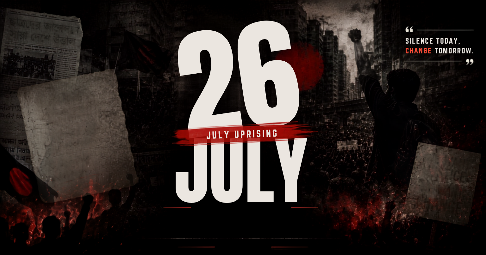

ISTIACK'S JULY CORNER
ইংরেজিতে পড়ুন
ইংরেজিতে পড়ুন

Share
Download
Print Options
Print in English
বাংলায় প্রিন্ট করুন (Print in Bangla)
Print Both (উভয়ই)
Cancel
Link Copied!
 ISTIACK'S JULY CORNER
ISTIACK'S JULY CORNER
ISTIACK'S JULY CORNER
ISTIACK'S JULY CORNER